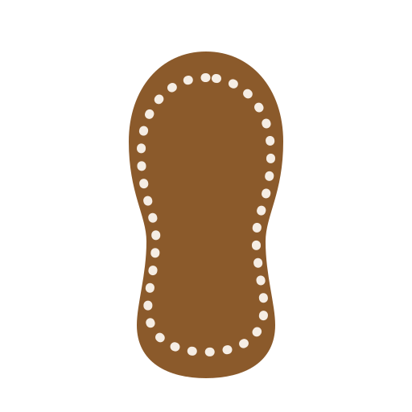
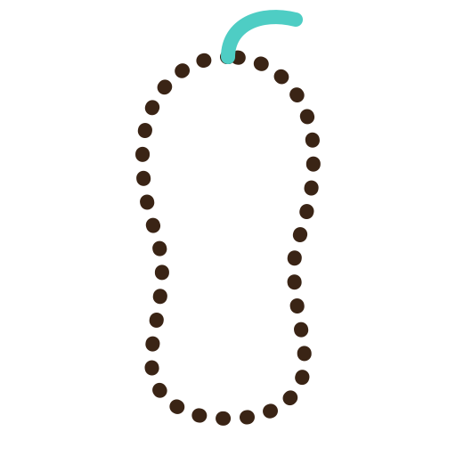
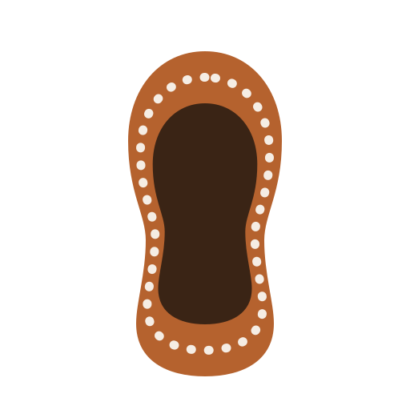

04 is the mark that ships. 01–03 are the earlier welt-stitch concepts, kept for reference. Everything is shown on the app's light page and dark page at real sizes, so small-size survival is visible rather than asserted.
The C stands for CUFMAI. Top row is the launcher icon itself, bottom row is the vector silhouette it was traced from.
cufmai-c-mark-1024.png · sole-mark-04-c-loafer.svg
Solid sole, inset stitch. Boldest of the three — the one that survives a launcher icon.
sole-mark-01-welt.svg

No fill — just the stitch, plus one teal thread at the toe. Recolours to a single ink for app bars.
sole-mark-02-running-stitch.svg

Welt ring in rust, footbed in espresso, stitch between. Most modern; two brand colours at once.
sole-mark-03-two-tone-welt.svg

The two swatches above are the mark's own colours, taken from the source render. They sit outside the app's original five tokens, so the mark reads warmer than the in-app UI around it.